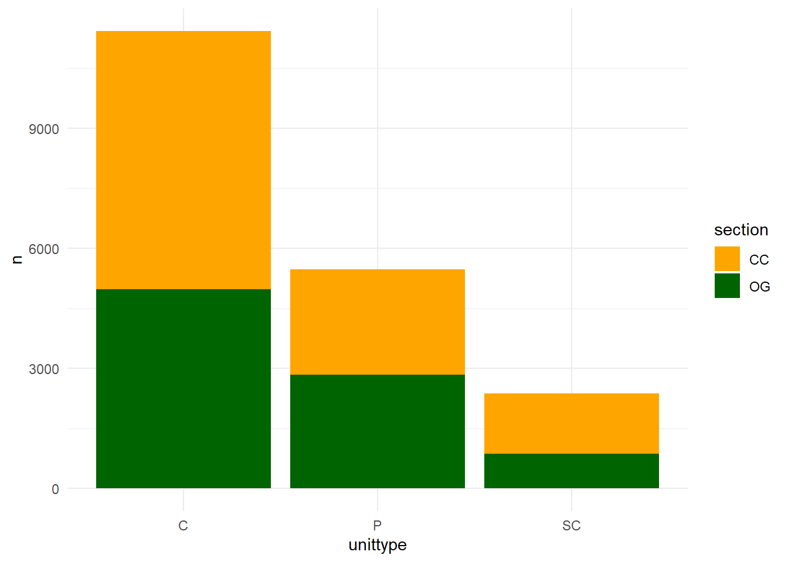
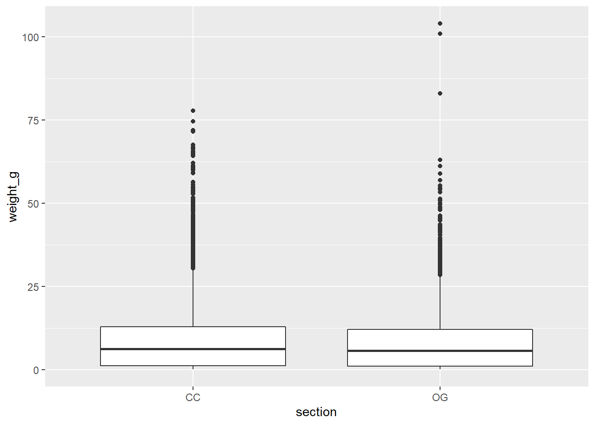

5 Introduction to Statistics
In this lesson you will be introduced to the process of conducting statistical tests in R, specifically chi-square, t-tests, and correlation tests.
First, to access the dataset(s) you will be using today install the remotes package, and then install the lterdatasampler package (remotes is needed because lterdatasampler has to be installed from Git Hub as opposed to CRAN).
install.packages("remotes")
remotes::install_github("lter/lterdatasampler")Now load in all libraries needed for this lesson:
library(tidyverse)
library(lterdatasampler)Then run the following line of code to retrieve the and_vertebrates data set and bring it into your R session:
data(and_vertebrates)5.1 Explore the dataset
Do a little exploration of this data first to understand its structure, variables and data types:
# View the data structure
glimpse(and_vertebrates)## Rows: 32,209
## Columns: 16
## $ year [3m[38;5;246m<dbl>[39m[23m 1987, 1987, 1987, 1987, 1987, 1987, 1987, 1987, 1987, 1987, 1987, 1987, 1987, 1987, 1987, 1987, 1987, 1987, 1987, 1987…
## $ sitecode [3m[38;5;246m<chr>[39m[23m "MACKCC-L", "MACKCC-L", "MACKCC-L", "MACKCC-L", "MACKCC-L", "MACKCC-L", "MACKCC-L", "MACKCC-L", "MACKCC-L", "MACKCC-L"…
## $ section [3m[38;5;246m<chr>[39m[23m "CC", "CC", "CC", "CC", "CC", "CC", "CC", "CC", "CC", "CC", "CC", "CC", "CC", "CC", "CC", "CC", "CC", "CC", "CC", "CC"…
## $ reach [3m[38;5;246m<chr>[39m[23m "L", "L", "L", "L", "L", "L", "L", "L", "L", "L", "L", "L", "L", "L", "L", "L", "L", "L", "L", "L", "L", "L", "L", "L"…
## $ pass [3m[38;5;246m<dbl>[39m[23m 1, 1, 1, 1, 1, 1, 1, 1, 1, 1, 1, 1, 1, 1, 1, 1, 1, 1, 1, 1, 1, 1, 1, 1, 1, 1, 1, 1, 1, 1, 1, 1, 1, 1, 1, 1, 1, 1, 1, 1…
## $ unitnum [3m[38;5;246m<dbl>[39m[23m 1, 1, 1, 1, 1, 1, 1, 1, 1, 1, 1, 1, 1, 1, 1, 1, 2, 2, 2, 2, 2, 2, 2, 2, 2, 2, 2, 2, 2, 2, 2, 2, 2, 2, 2, 2, 2, 2, 2, 2…
## $ unittype [3m[38;5;246m<chr>[39m[23m "R", "R", "R", "R", "R", "R", "R", "R", "R", "R", "R", "R", "R", "R", "R", "R", "C", "C", "C", "C", "C", "C", "C", "C"…
## $ vert_index [3m[38;5;246m<dbl>[39m[23m 1, 2, 3, 4, 5, 6, 7, 8, 9, 10, 11, 12, 13, 14, 15, 16, 1, 2, 3, 4, 5, 6, 7, 8, 9, 10, 11, 12, 13, 14, 15, 16, 17, 18, …
## $ pitnumber [3m[38;5;246m<dbl>[39m[23m NA, NA, NA, NA, NA, NA, NA, NA, NA, NA, NA, NA, NA, NA, NA, NA, NA, NA, NA, NA, NA, NA, NA, NA, NA, NA, NA, NA, NA, NA…
## $ species [3m[38;5;246m<chr>[39m[23m "Cutthroat trout", "Cutthroat trout", "Cutthroat trout", "Cutthroat trout", "Cutthroat trout", "Cutthroat trout", "Cut…
## $ length_1_mm [3m[38;5;246m<dbl>[39m[23m 58, 61, 89, 58, 93, 86, 107, 131, 103, 117, 100, 127, 99, 111, 149, 102, 53, 58, 58, 105, 145, 97, 118, 110, 133, 99, …
## $ length_2_mm [3m[38;5;246m<dbl>[39m[23m NA, NA, NA, NA, NA, NA, NA, NA, NA, NA, NA, NA, NA, NA, NA, NA, NA, NA, NA, NA, NA, NA, NA, NA, NA, NA, NA, NA, NA, NA…
## $ weight_g [3m[38;5;246m<dbl>[39m[23m 1.75, 1.95, 5.60, 2.15, 6.90, 5.90, 10.50, 20.60, 9.55, 13.00, 8.25, 17.70, 8.15, 11.25, 27.15, 9.25, 1.45, 2.10, 2.05…
## $ clip [3m[38;5;246m<chr>[39m[23m "NONE", "NONE", "NONE", "NONE", "NONE", "NONE", "NONE", "NONE", "NONE", "NONE", "NONE", "NONE", "NONE", "NONE", "NONE"…
## $ sampledate [3m[38;5;246m<date>[39m[23m 1987-10-07, 1987-10-07, 1987-10-07, 1987-10-07, 1987-10-07, 1987-10-07, 1987-10-07, 1987-10-07, 1987-10-07, 1987-10-0…
## $ notes [3m[38;5;246m<chr>[39m[23m NA, NA, NA, NA, NA, NA, NA, NA, NA, NA, NA, NA, NA, NA, NA, NA, NA, NA, NA, NA, NA, NA, NA, NA, NA, NA, NA, NA, NA, NA…# Explore the metadata in the Help pane
?and_vertebratesThis data set contains length and weight observations for three aquatic species in clear cut and old growth coniferous forest sections of Mack Creek in HJ Andrews Experimental Forest in Oregon. The three species are Cutthroat trout, Coastal giant salamander and Cascade torrent salamander.
5.2 Chi-square - Categorical Analysis
When you are working with two categorical variables, the statistical test you would use is a Chi-square test. This test can tell you if there is a relationship between your two categorical variables.
For example, we have two categorical variables in the and_vertebrates data set:
section= two forest sections, clear cut (CC) and old growth (OG)unittype= channel unit classification type (C = cascade, I = riffle, IP = isolated pool (not connected to channel), P = pool, R = rapid, S = step (small falls), SC = side channel, NA = not sampled by unit)
Lets focus this question on cutthroat trout. First explore the abundance of cutthroat trout in different channel types.
and_vertebrates %>%
filter(species == "Cutthroat trout") %>%
group_by(unittype) %>%
summarise(abundance = n())## # A tibble: 8 × 2
## unittype abundance
## <chr> <int>
## 1 C 11419
## 2 I 23
## 3 IP 105
## 4 P 5470
## 5 R 420
## 6 S 9
## 7 SC 2377
## 8 <NA> 610This output tells us that there are quite a few observations with the NA category, meaning channel types was unknown. Let’s edit the workflow above slightly, using two new functions drop_na() and count(). drop_na() will remove any rows within a specified column (or columns) that have NA values, and we can use count() as an alternative to group_by() and summarise() when we just want number of observations for a single variable (in this case unittype).
and_vertebrates %>%
filter(species == "Cutthroat trout") %>%
drop_na(unittype) %>%
count(unittype)## # A tibble: 7 × 2
## unittype n
## <chr> <int>
## 1 C 11419
## 2 I 23
## 3 IP 105
## 4 P 5470
## 5 R 420
## 6 S 9
## 7 SC 2377This returns just about the same data frame as the first method, but now with the NA category removed.
From this we also see the highest Cutthroat trout abundances are found in cascade (C), pool (P), and side channel (SC) habitats.
Now, our question expands beyond this one categorical variable (channel type) and we want to know if abundance is affected by both channel and and forest type (section). Here, our null hypothesis is that forest and channel type are independent. To test this, we use the chisq.test() , but first we have to reformat our data into a contingency table. A contingency table is in matrix format, where each cell is the frequency (in this case seen as abundance) of Cutthroat trout in each combination of categorical variables (forest type and channel unit). We can create a contingency table with the table() function.
# First clean the dataset to create the contingency table from
trout_clean <- and_vertebrates %>%
#filter out Cutthroat trout
filter(species == "Cutthroat trout") %>%
# lets test using just the 3 most abundant unittypes
filter(unittype %in% c("C", "P", "SC")) %>%
# drop NAs for both unittype and section
drop_na(unittype, section)
cont_table <- table(trout_clean$section, trout_clean$unittype)To execute the Chi Square test does not take that much code, but it is important to note that by default, chisq.test() assumes the null hypothesis is that all frequencies have equal probability. If you have different pre-conceived frequency probabilities for your data you have to define those within the chisq.test() function.
chisq.test(cont_table)##
## Pearson's Chi-squared test
##
## data: cont_table
## X-squared = 188.68, df = 2, p-value < 2.2e-16Lets look at the abundance distribution visually:
trout_clean %>%
count(unittype, section) %>%
ggplot(aes(x = unittype, y = n))+
geom_col(aes(fill = section))+
scale_fill_manual(values = c("orange", "darkgreen"))+
theme_minimal()
5.3 t-test - Compare two means
Previous work has shown that forest harvesting can impact aquatic vertebrate biomass (Kaylor & Warren 2017). With this and_vertebrates data set we can investigate this hypothesis, by comparing weight to forest type (clear cut or old growth). This therefore involves a test comparing the means (average weight) among two groups (clear cut and old growth forests), which then requires a t-test.
Note: In the t.test() function you can add paired = TRUE to conduct a paired t-test. These are for cases when the groups are ‘paired’ for each observation, meaning each group/treatment was applied to the same individual, such as before and after experiments.
Lets focus on conducting this test for just Cutthroat trout (to reduce species-level variances in weight) and first visualize the differences in weight among forest type with a boxplot:
and_vertebrates %>%
filter(species == "Cutthroat trout") %>%
drop_na(section, weight_g) %>%
ggplot(aes(x = section, y = weight_g))+
geom_boxplot()
We don’t see too much of a difference based on this visual, but lets conduct the statistical test to see if your hypothesis is supported.
wilcox.test(trout_clean$weight_g ~ trout_clean$section)##
## Wilcoxon rank sum test with continuity correction
##
## data: trout_clean$weight_g by trout_clean$section
## W = 17107703, p-value = 0.0005299
## alternative hypothesis: true location shift is not equal to 05.5 Exercises
- Conduct a correlation test similar to the one we carried out earlier in this lesson plan, but test for a relationship between forest type (
section) and channel unit (unittype) for the Coastal giant salamander. Keep all unittypes instead of filtering any like we did for the Cutthroat trout. To answer this questions fully (10 pts):Include the code you used to clean the data and conduct the Chi square test.
Report the findings of your test in proper scientific format (with the p-value in parentheses).
5.5.1 Acknowledgements
Thanks to the developers of lterdatasampler for providing the data set and vignettes that helped guide the creation of this lesson plan.
5.5.2 Citations
Data Source: Gregory, S.V. and I. Arismendi. 2020. Aquatic Vertebrate Population Study in Mack Creek, Andrews Experimental Forest, 1987 to present ver 14. Environmental Data Initiative. https://doi.org/10.6073/pasta/7c78d662e847cdbe33584add8f809165
Kaylor, M.J. and D.R. Warren. 2017. Linking riparian shade and the legacies of forest management to fish and vertebrate biomass in forested streams. Ecosphere 8(6). https://doi.org/10.1002/ecs2.1845